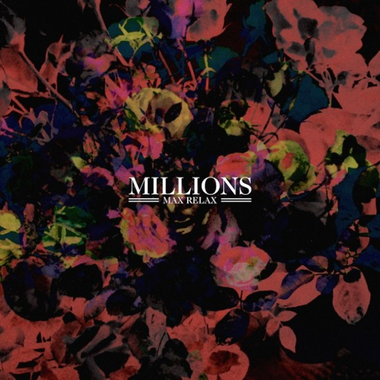

|  |
Millions Max Relax Stop Start Music 14 August 2014 |
Slipping under the radar for a year or two to London while working on their album, Brisbane boys Millions have rewarded everyone’s patience with debut ‘Max Relax’. Starting out as a self proclaimed mantra for the band, the name is an ideal representation of this collection of tracks, songs with a certain charm and vibe that just call for supreme enjoyment. And with some new instruments to experiment with, Millions have departed somewhat from their previous two EPs, and have immersed themselves with sounds reminiscent of the 60s and 70s, showcasing their newfound songwriting prowess. Exuding a nostalgic sense of psychedelia while adding elements of today’s day and age is album opener Writing On The Wall, a track than encapsulates the best of both worlds and sets us up for what’s to come. The bouncy drums and pulsing bass kick the groove off immediately, creating infectious rhythm that simply asks the listener to move along with it. Topped off with the swirling guitars and earnest vocals, the song is bursting at the seams with its attention grabbing hooks, groovy atmospheres and driving rhythms. And sparkling in the sunlight is the lead single Clementine, a glistening pop track brimming with melodies, encapsulating the charm that Millions inherently possess. Showcasing the storytelling talents of frontman Dominic and the band, they take us on a journey of falling in and out of love. Setting the tone with the jangly guitars, vibrant drumming, bubbly bass lines and even a touch of keys, the song emulates the highs and lows of love. The vocals float along with the rest of the instruments, and surprise falsettos from the frontman reinforce the idea that this song is one worthy of notice. These two songs represent this body of work well - Writing On The Wall showcases the band’s ability to delve into the psychedelic world of music while Clementine highlights the skill in crafting beautiful pop songs. Filled with these glistening tracks featuring the earnest vocals of frontman Dom, ‘Max Relax’ serves as the perfect introduction to the band Millions. If there is an album to listen to this Spring (and forever after), I’d say it would have to be this one. Originally written for City And Sound. |